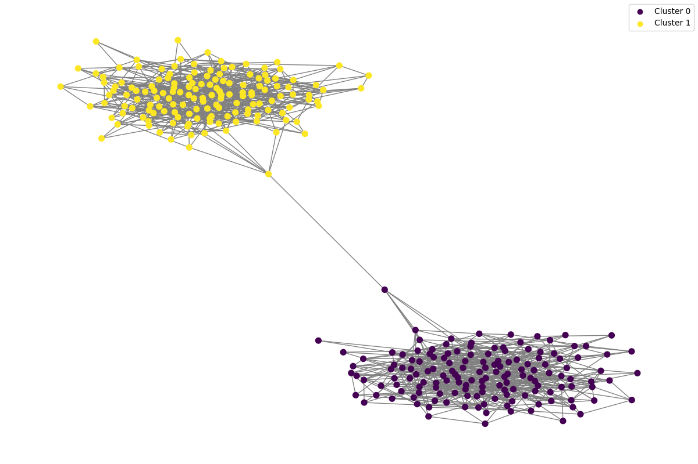
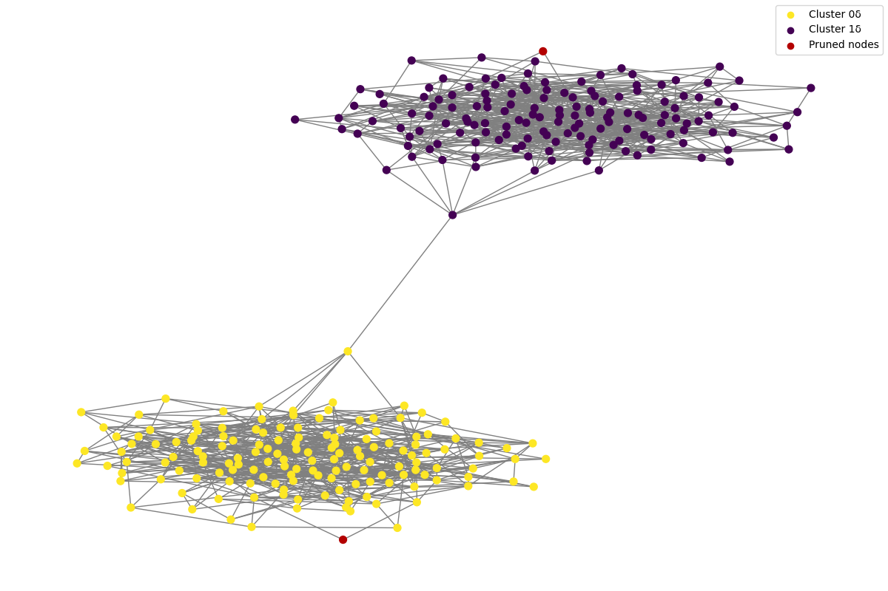

Quick Start Guide
Running CM++
Suppose you have a network and a clustering of the network that you want to refine. For this tutorial, I will use the following network and clustering.
You know that these clusters aren't well-connected, and you want to use CM++ to enforce better connectivity.
Visualizing the Data
First, you can visualize the graph and clustering. This can be done via the following Python script:
import matplotlib.pyplot as plt
import networkx as nx
import pandas as pd
# Load the clustering data
clustering_file = 'clustering.tsv'
clustering_data = pd.read_csv(clustering_file, sep='\t', header=None, names=['node_id', 'cluster_id'])
# Load the edge list data
edge_list_file = 'network.tsv'
G = nx.read_edgelist(edge_list_file, delimiter='\t', nodetype=int)
# Assign cluster IDs to nodes in the graph
node_cluster_mapping = dict(clustering_data.values)
nx.set_node_attributes(G, node_cluster_mapping, 'cluster')
# Generate a color map for clusters
unique_clusters = set(node_cluster_mapping.values())
color_map = plt.cm.get_cmap('viridis', len(unique_clusters))
colors = {cluster: color_map(i) for i, cluster in enumerate(unique_clusters)}
# Assign color to each node based on cluster
node_colors = [colors[node_cluster_mapping[node]] for node in G.nodes()]
# Plot the graph
plt.figure(figsize=(12, 8))
nx.draw(G, node_color=node_colors, with_labels=False, node_size=50, edge_color='gray')
plt.savefig('patitions.png')
plt.show()
Running this script results in the following:

Installing and Running CM++
CM++ can form these into well-connected clusters. Firstly, CM++ can be quickly installed with the following command:
pip install git+https://github.com/illinois-or-research-analytics/cm_pipeline
If you want all clusters to have a connectivity above log10(n) (all clusters have a mincut value above log10 of the number of nodes in the cluster), you can run the command below:
python3 -m hm01.cm -i network.tsv -e clustering.tsv -o out.tsv -c leiden -g 0.5 -t 1log10
Visualize Post-CM Clustering
CM++ pruned some nodes from this clustering to form well-connected clusters. You can visualize the clustering through the following script:
import matplotlib.pyplot as plt
import networkx as nx
import pandas as pd
# Load the clustering data
clustering_file = 'out.tsv'
clustering_data = pd.read_csv(clustering_file, sep='\t', header=None, names=['node_id', 'cluster_id'])
# Load the edge list data
edge_list_file = 'network.tsv'
G = nx.read_edgelist(edge_list_file, delimiter='\t', nodetype=int)
# Assign cluster IDs to nodes in the graph
node_cluster_mapping = dict(clustering_data.values)
nx.set_node_attributes(G, node_cluster_mapping, 'cluster')
# Generate a color map for clusters
unique_clusters = set(node_cluster_mapping.values())
color_map = plt.cm.get_cmap('viridis', len(unique_clusters))
colors = {cluster: color_map(i) for i, cluster in enumerate(unique_clusters)}
colors['pruned'] = (0.7, 0, 0)
# Assign color to each node based on cluster
node_colors = [(0.7, 0, 0) if node not in node_cluster_mapping else colors[node_cluster_mapping[node]] for node in G.nodes()]
# Plot the graph
plt.figure(figsize=(12, 8))
nx.draw(G, node_color=node_colors, with_labels=False, node_size=50, edge_color='gray')
# Create a legend
plt.scatter([], [], c=colors['0\u03B4'], label='Cluster 0\u03B4')
plt.scatter([], [], c=colors['1\u03B4'], label='Cluster 1\u03B4')
plt.scatter([], [], c=colors['pruned'], label='Pruned nodes')
plt.legend()
plt.savefig('patitions2.png')
plt.show()
Resulting in the following visualization:

The red nodes are nodes that have been pruned off by CM++ to make clusters well-connected.
Running CM Pipeline
Suppose now, you do not have a clustering, and you want to compute statistics on these clusters. Then, you must run the CM Pipeline.
Installing the CM Pipeline
A pip install alone is not sufficient for the entire pipeline. The pipeline can be installed via Git cloning:
- Clone the cm_pipeline repository
- Activate the venv which has the necessary packages
- Run
pip install -r requirements.txt && pip install . - Make sure everything installed properly by running
cd tests && pytest
Downloading the Data
For this tutorial, I will use the following network
Constructing the Pipeline
In order to make a pipeline with the following stages,
- Clustering
- Compute Statistics
- CM++
- Compute Statistics
in the root of the repository, create a pipeline.json file like the following:
{
"title": "example-leiden",
"name": "example",
"input_file": "/path/to/network.tsv",
"output_dir": "samples/",
"algorithm": "leiden",
"params": [{
"res": 0.01,
"i": 2
}],
"stages": [
{
"name": "clustering"
},
{
"name": "stats"
},
{
"name": "connectivity_modifier",
"threshold": "1log10"
},
{
"name": "stats"
}
]
}
Replace "input_file" with the path to the network.tsv file. This path can be relative to the pipeline.json file or absolute. The "title" and "name" fields exist for output nomenclature and can be arbitrarily renamed.
Running the Pipeline
Once a pipeline.json file is ready, from the root of the repository, simply run:
python3 -m main pipeline.json
Results
When running the pipeline, you should get the outputs in a directory called samples/(name)-leiden-(timestamp)/ where name is replaced with the name of the run and the timestamp is the time at which the CM Pipeline was run.
Before CM++
You should result in statistics like the following:
| cluster | n | m | modularity | cpm_score | connectivity | connectivity_normalized_log10(n) | connectivity_normalized_log2(n) | connectivity_normalized_sqrt(n)/5 | conductance |
|---|---|---|---|---|---|---|---|---|---|
| 0 | 150 | 555 | 0.2492196158940795 | 443.25 | 2.0 | 0.9190791018883572 | 0.2766703780563079 | 0.8164965809277261 | 0.0009000900090009 |
| 1 | 150 | 598 | 0.24921961589407954 | 486.25 | 2.0 | 0.9190791018883572 | 0.2766703780563079 | 0.8164965809277261 | 0.0009000900090009 |
| Overall | 300 | 1154 | 0.4984392317881591 | 929.5 |
Notice how the connectivity normalized by log10(n) is less than 1, indicating that the clusters have mincuts less than the log of the number of nodes. Therefore, they aren't well connected.
After CM++
| cluster | n | m | modularity | cpm_score | connectivity | connectivity_normalized_log10(n) | connectivity_normalized_log2(n) | connectivity_normalized_sqrt(n)/5 | conductance |
|---|---|---|---|---|---|---|---|---|---|
| 1δ | 149 | 596 | 0.2483846030234675 | 485.74 | 3.0 | 1.380461511102679 | 0.4155603227015324 | 1.2288478807785608 | 0.0026954177897574125 |
| 0δ | 149 | 553 | 0.24832002468994893 | 442.74 | 3.0 | 1.380461511102679 | 0.4155603227015324 | 1.2288478807785608 | 0.002705139765554554 |
| Overall | 300 | 1154 | 0.4967046277134164 | 928.48 |
As you can see, nodes have been pruned, and the mincut values have increased. The normalized mincut value to log10(n) is now above 1, meaning it fits the connectivity threshold.